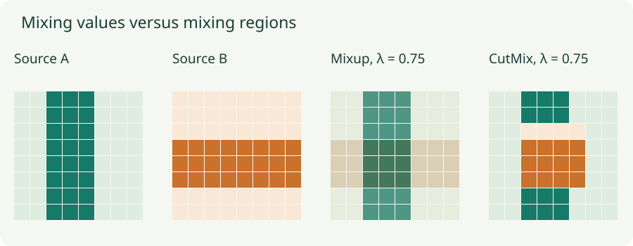

Data Augmentation, Mixup, and CutMix: Change the Training Distribution
Connect transformations to invariance, calculate mixed labels, and inspect the geometry of synthetic examples.
Augmentation changes which inputs the model sees during training. A crop says that some changes of framing should preserve the answer. Mixup asks for interpolated predictions between examples. CutMix asks the model to use evidence from different image regions. These are assumptions about the task, expressed through a modified training distribution.
1. Training over transformations
For a label-preserving transformation $T$, augmented training minimizes an expectation such as
Each sampled transformation gives another view on which the model must perform well. It does not create an independent new measurement of the world. The benefit depends on whether the transformations express variations that should actually preserve the target.
For classification, we often want approximate invariance: $f(Tx)\approx f(x)$. For segmentation or keypoint prediction, we instead need equivariance: transform the output coordinates or mask along with the input. Rotating an image while keeping its segmentation map fixed silently corrupts supervision.
A horizontal flip may preserve an object category but change the meaning of text or handedness. A crop can remove the only object that justified the original label. For time series, transformations must respect causality and units; for tabular data, mixing rows may create impossible combinations. Inspect augmented examples with their targets, not just their visual appearance.
2. Mixup interpolates both the input and the supervision
Choose two training examples $(x_A,y_A)$ and $(x_B,y_B)$, and a coefficient $\lambda\in[0,1]$. Mixup constructs
For classification, $y_A$ and $y_B$ are usually one-hot vectors. With classes A and B and $\lambda=0.7$, the target becomes $(0.7,0.3)$. This asks for a soft distribution, not an arbitrary choice of one hard class.
Cross-entropy is linear in its target distribution. Therefore
Both losses use the prediction on the same mixed input. This is not the same as separately evaluating the two original inputs and averaging their losses. If that mixed input receives probabilities $(0.8,0.2)$, its loss is $-0.7\log0.8-0.3\log0.2\approx0.639$.
The usual recipe draws $\lambda\sim\operatorname{Beta}(\alpha,\alpha)$. Small positive $\alpha$ concentrates samples toward the endpoints; $\alpha=1$ is uniform; larger $\alpha$ concentrates them around the middle. This controls how much interpolation the model is asked to support. The lab lets you choose $\lambda$ directly so the geometry is inspectable.
3. CutMix keeps pixels intact and mixes regions
Let $M$ be a binary spatial mask that is 1 where image A is retained and 0 where a patch from B is inserted. Then
Use $\tilde y=\lambda_{\rm actual}y_A+(1-\lambda_{\rm actual})y_B$. The coefficient is based on the area actually replaced, after clipping and integer rounding. A requested mixing coefficient is only a proposal for patch dimensions.
For an $8\times8$ image, inserting a $4\times4$ patch replaces 16 of 64 pixels, so A retains weight $0.75$. If that patch straddles a border and only $2\times4$ pixels lie inside the image, A retains weight $0.875$. Reusing $0.75$ would disagree with the pixels that were actually copied.

4. Lab: see the image and target change together
Pixels, clipped area, and soft targets
Choose a requested A fraction. For CutMix, the square side is rounded from $8\sqrt{1-\lambda}$; its vertical center stays at 4. Move the horizontal center to clip the patch and observe the corrected label weight.
The labels in this demonstration describe the mixture rule; they are not semantic predictions from a classifier. Area is a useful training heuristic, but it does not measure exactly how much class evidence a patch contains. A small patch might contain the whole object, or none of it.
5. Related methods encode different assumptions
| Method | Input operation | Target treatment |
|---|---|---|
| Crop, flip, color jitter | Change a view of one example | Keep the label only when the task permits; transform spatial targets. |
| Cutout / random erasing | Remove or replace a region with a filler | Usually keep the original class label. |
| Mixup | Blend complete examples | Interpolate targets with the same coefficient. |
| CutMix | Paste a region from another example | Mix class targets by actual pixel area. |
| Feature-space mixing | Interpolate hidden representations | Use a corresponding target mixture; placement changes the method. |
Erasing and CutMix can both encourage reliance on multiple regions, but erasing does not supply the second image’s evidence or target. They should not be treated as identical just because both use rectangles.
6. A minimal implementation pattern
# x and y contain training examples; y holds class indices.
permutation = torch.randperm(x.shape[0], device=x.device)
mixed_x = lam * x + (1 - lam) * x[permutation]
logits = model(mixed_x)
loss = lam * cross_entropy(logits, y)
loss += (1 - lam) * cross_entropy(logits, y[permutation])This code assumes one scalar $\lambda$ for the batch and compatible loss reductions. For per-example coefficients, compute unreduced losses before weighting and averaging. For CutMix, copy the clipped patch and replace $\lambda$ with its measured area fraction.
7. Keep evaluation connected to the actual task
Split independent subjects, documents, or acquisition groups before constructing augmented views. Related views from one source should not end up on both sides of a train–validation split. Fit preprocessing statistics using training data, then apply the frozen transformation to validation and test examples.
Evaluate the intended deployment distribution. Test-time augmentation is a separate prediction procedure whose cost and aggregation rule should be reported. Strong augmentation may require more training to fit its harder objective. Compare runs with an appropriate training budget, and check whether improvements survive on the relevant held-out data.
Questions with answers
The soft target communicates the chosen interpolation constraint. Hardening it discards the relative contribution and changes the objective.
No. It is an area-based supervision rule, not an exact measure of how much of an object is visible.
The copied region may be smaller than requested. The target should follow the region actually inserted.
Sources
Zhang et al., mixup; Yun et al., CutMix. Images in the lab are generated patterns, and all area fractions are computed from the displayed pixels.